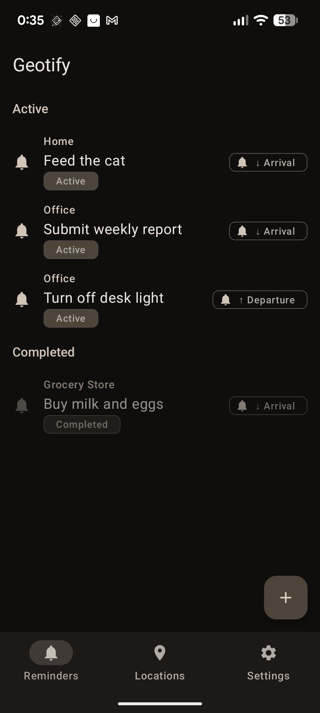
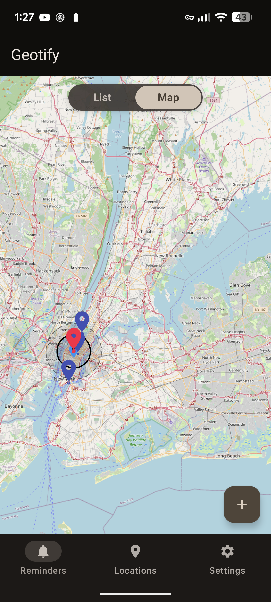
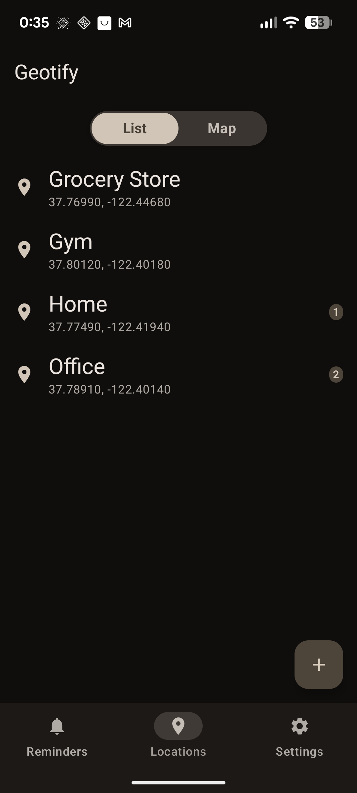
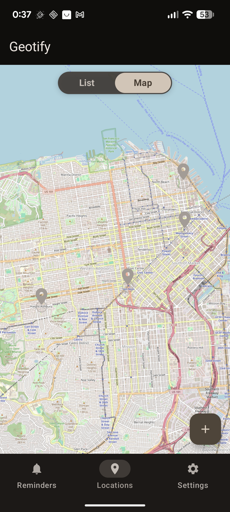
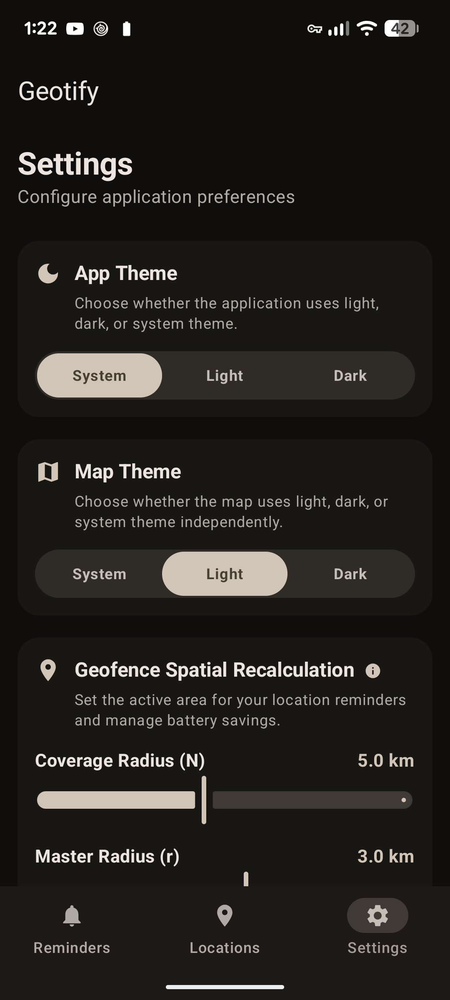

Geotify
A modern, location-aware Android application that allows users to create and manage geofenced reminders, built with Jetpack Compose and system-level Jetpack AppFunctions.
View on GitHubWe are currently running internal tests to refine Geotify. To test the app:
- Join our Google Group for Testers (required to grant access).
- Opt-in to the testing program via the Google Play Testing Portal.
- Download the app from the Google Play Store.
What is Geotify?
Geotify is an Android utility application designed to help you organize your life around physical locations. By combining Google Play Services Geofencing APIs with a local Room Database, Geotify delivers notifications dynamically based on your physical location transitions (arrival and departure).
Whether it's reminding you to buy groceries when entering a supermarket, picking up keys when leaving your office, or locking the front door when leaving home, Geotify manages all your geofenced triggers seamlessly in the background with minimal battery drain.
Features
Save coordinates or pick them interactively using the Map Picker. Customize geofence radius (minimum 50m) and notification responsiveness.
Receive rich notifications instantly upon arriving at or departing from saved location aliases (e.g., 'home', 'office').
Interactive maps powered by osmdroid. View all saved locations and active geofences dynamically with themed map tiles.
Bypasses the system limit of 100 geofences by dynamically monitoring the 99 closest locations to the user and recalculating on transition events.
Exposes system-discoverable APIs, making the app capable of being driven by local LLMs or voice assistants on Android 16+.
Beautiful Material 3 Jetpack Compose UI. Out-of-the-box localization for English, Spanish, German, French, Italian, and Portuguese.
Screenshots





Expose AppFunctions (AI / Agentic Integration)
AppFunctions integration is enabled for devices running Android 16+, but will not fully function until Google officially releases the Jetpack AppFunctions library to General Availability.
Geotify implements the androidx.appfunctions APIs, establishing a bridge that allows system services, voice assistants, and local Large Language Models (LLMs) to discover and execute actions within the app context.
AppFunction APIs Available
| Function Schema | Description | Return Type |
|---|---|---|
saveCurrentLocation(alias: String) |
Fetches high-accuracy GPS coordinates in the background and saves them. | SaveLocationResult |
createGeofenceReminder(targetAlias: String, payloadMessage: String, triggerOnArrival: Boolean) |
Creates a reminder linked to a saved location alias, triggering on entry or exit. | CreateReminderResult |
listLocations() |
Retrieves all saved locations. | List<SavedLocation> |
deleteLocation(alias: String) |
Deletes a saved location and all associated reminders. | DeleteResult |
deleteReminder(targetAlias: String, message: String?) |
Cancels and removes active geofence triggers matching the location. | DeleteResult |
listActiveReminders() |
Retrieves all currently active reminders. | List<SavedReminder> |
System Permissions Required
To function correctly in the background, Geotify requests the following permissions:
- ACCESS_FINE_LOCATION & ACCESS_COARSE_LOCATION: To obtain the device's coordinates for saving and picking locations.
- ACCESS_BACKGROUND_LOCATION: Required by the system to monitor geofences in the background when the app is closed.
- POST_NOTIFICATIONS: To show notifications when geofence transitions occur.
- ACTIVITY_RECOGNITION: To detect transition events (e.g., walking, driving) and trigger smart spatial recalculations.
- RECEIVE_BOOT_COMPLETED: To restore geofences when the device restarts.
Building the Project
Ensure you have Android Studio and the Android SDK installed on your machine.
Clone and Navigate
git clone https://github.com/arrase/Geotify.git
cd GeotifyBuild with Gradle
./gradlew assembleDebugRun the application on an emulator or physical Android device with Google Play Services enabled.